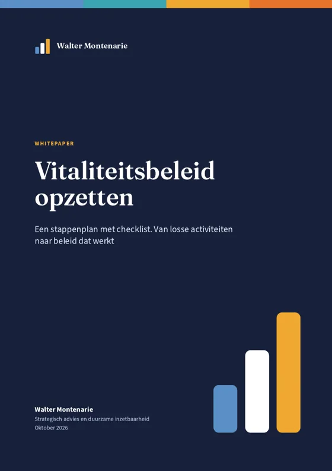

Artikelen Vitaliteitsbeleid
Vitaliteitsbeleid
Fruit op het werk en een workshop zijn nog geen beleid. Hier lees je hoe je vitaliteitsbeleid opzet dat samenhangt, een doel heeft en laat zien wat het oplevert.
Wat is vitaliteitsbeleid?
Vitaliteitsbeleid is de manier waarop een organisatie ervoor zorgt dat medewerkers gezond, met energie en met plezier kunnen werken. Het gaat over meer dan leefstijl: werkdruk, leiderschap en cultuur horen er net zo goed bij. Beleid heeft een doel, een eigenaar en een meting. Losse activiteiten zoals fruit op het werk zijn nog geen beleid.

Gratis whitepaperVitaliteitsbeleid opzettenVan losse activiteiten naar beleid dat werkt. Met zeven stappen, een jaarplanning en een checklist.Download de whitepaper TrainingTraining vitaal leiderschapVan zelfzorg tot cultuurverandering. Je ontdekt hoe je een goed voorbeeld bent voor je team.Bekijk de training Gratis toolVitaliteitsmeterGratis vitaliteitsscan: 26 stellingen en je ziet direct waar je organisatie staat.Naar de toolArtikelen over vitaliteitsbeleid
-
Vitaliteitsbeleid opzetten: stappenplan en voorbeeld
Van losse activiteiten naar beleid dat werkt. Zeven stappen, drie niveaus en vijf fouten om te vermijden.
Lees het artikel -
Vitaliteit op de werkvloer: wat werkt en elf tips
Meer dan fruit en een sportweek. Wat volgens onderzoek werkt, en elf tips voor de organisatie, de leidinggevende en de medewerker.
Lees het artikel -
Zes bouwblokken voor vitaliteitsbeleid dat werkt
Waarom het ene vitaliteitsprogramma wel rendeert en het andere niet. De zes bouwblokken uit onderzoek en praktijk.
Lees het artikel -
Wat is duurzame inzetbaarheid en hoe begin je ermee?
Uitgelegd in gewone taal: de drie bouwstenen, waarom het nu urgent is en vijf stappen om te beginnen.
Lees het artikel -
Mantelzorgvriendelijk werkgeverschap in vijf afspraken
Mantelzorg hangt samen met bijna een vijfde van het verzuim. Vijf afspraken om er als organisatie beleid van te maken.
Lees het artikel -
Diabetes type 2 voorkomen begint op het werk
Werknemers zitten bijna negen uur per werkdag. Zes stappen voor een werkplek die helpt om diabetes type 2 te voorkomen.
Lees het artikel -
Businesscase vitaliteit: zo maak je hem in vijf stappen
Bereken wat verzuim kost, bepaal je investering en zie bij welke daling van het verzuim je die terugverdient.
Lees het artikel -
Rendement van een vitaliteitsprogramma: lessen van tien organisaties
Harvard Business Review onderzocht tien organisaties waar vitaliteit aantoonbaar iets opleverde. De cijfers, zes bouwblokken en vier kanttekeningen.
Lees het artikel
Hier samen mee aan de slag?
Vertel me wat er speelt. In een gratis gesprek van 30 minuten kijken we wat zinvol is voor jouw organisatie.
Andere thema's: Werkdruk Burn-out en verzuim Cultuurverandering